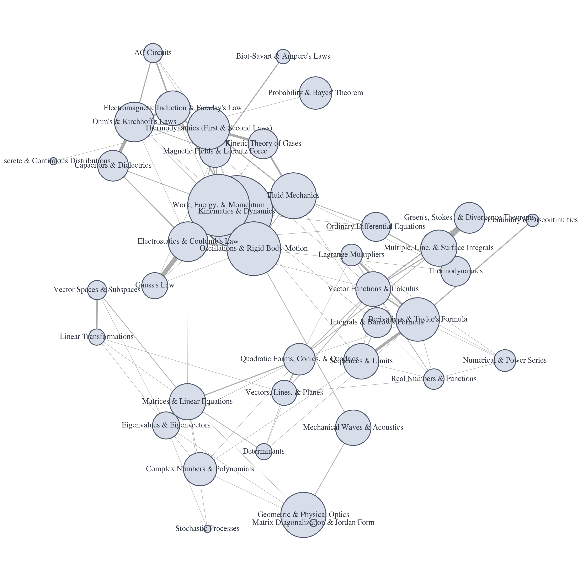

Red de Co-ocurrencia de Temas
Este grafo de red visualiza las relaciones entre temas. Una línea que conecta dos temas indica que
aparecieron juntos en el mismo ejercicio. Las líneas más gruesas representan co-ocurrencias más
frecuentes, y los nodos más grandes representan los temas más frecuentes en general.

Guía de Lectura por Libro de Texto
Esta es una guía de estudio reorganizada y completa, basada en la lista de temas de las materias cursadas. Despliega cada libro de texto para ver los capítulos y secciones relevantes, ordenados lógicamente.
Cálculo (Stewart)
- Cálculo Diferencial (Una Variable):
- Funciones y Límites: Capítulos 1 y 2.
- Derivadas y sus Aplicaciones: Capítulos 3 y 4.
- Cálculo Integral (Una Variable):
- La Integral y el Teorema Fundamental: Capítulo 5.
- Aplicaciones y Técnicas de Integración: Capítulos 6, 7 y 8.
- Sucesiones y Series:
- Sucesiones, Límites, Series Numéricas y de Potencias: Capítulo 11.
- Fórmula de Taylor y Aplicaciones: Secciones 11.10 y 11.11.
- Geometría Analítica y Álgebra Vectorial:
- Vectores, Productos Escalar/Vectorial, Rectas y Planos: Capítulo 12.
- Cónicas y Cuádricas: Sección 12.6.
- Cálculo Multivariable y Vectorial:
- Funciones Vectoriales y Curvas: Capítulo 13.
- Derivadas Parciales y Multiplicadores de Lagrange: Capítulo 14 (específicamente 14.8).
- Integrales Múltiples y Cambio de Coordenadas: Capítulo 15.
- Integrales de Línea/Superficie y Teoremas de Green, Stokes y Divergencia: Capítulo 16.
- Ecuaciones Diferenciales Ordinarias:
- Métodos Elementales y Ecuaciones de 1er Orden: Capítulo 9.
- Ecuaciones Diferenciales de 2º Orden: Capítulo 17.
- Apéndices Relevantes:
- Números Complejos y Polinomios: Apéndice H (en `Single james.pdf`) / G (en `Multi book.pdf`).
Mecánica (Kleppner & Kolenkow)
- Fundamentos de Cinemática y Dinámica:
- Vectores y Cinemática: Capítulo 1.
- Leyes de Newton, Fuerzas y Ecuaciones de Movimiento: Capítulos 2 y 3.
- Leyes de Conservación:
- Momento Lineal e Impulso: Capítulo 4.
- Trabajo y Energía: Capítulo 5.
- Sistemas de Partículas y Cuerpos Rígidos:
- Oscilaciones: Sección 6.2 del Capítulo 6.
- Momento Angular y Movimiento del Cuerpo Rígido: Capítulos 7 y 8.
Electromagnetismo (Purcell & Morin)
- Electrostática:
- Carga, Campo Eléctrico, Ley de Coulomb y Ley de Gauss: Capítulo 1.
- Potencial Eléctrico: Capítulo 2.
- Conductores, Capacitores y Dieléctricos: Capítulos 3 y 10.
- Magnetostática:
- Fuerza de Lorentz y Campos de Cargas en Movimiento: Capítulo 5.
- El Campo Magnético (Leyes de Biot-Savart y Ampere): Capítulo 6.
- Campos Magnéticos en la Materia: Capítulo 11.
- Circuitos y Electrodinámica:
- Corriente Eléctrica (Leyes de Ohm y Kirchhoff): Capítulo 4.
- Inducción Electromagnética (Ley de Faraday): Capítulo 7.
- Circuitos de Corriente Alterna: Capítulo 8.
- Ecuaciones de Maxwell: Capítulo 9.
Probabilidad y Estadística (Devore)
- Fundamentos de Probabilidad:
- Espacios Muestrales, Eventos, Probabilidad Condicional y Teorema de Bayes: Capítulo 2.
- Variables Aleatorias y Distribuciones de Probabilidad:
- Variables Aleatorias Discretas y Continuas: Capítulos 3 y 4.
- Distribuciones Conjuntas, Momentos y Correlación: Capítulo 5.
- Inferencia Estadística:
- Conceptos de Estimación: Capítulo 6.
- Intervalos de Confianza: Capítulo 7.
- Pruebas de Hipótes